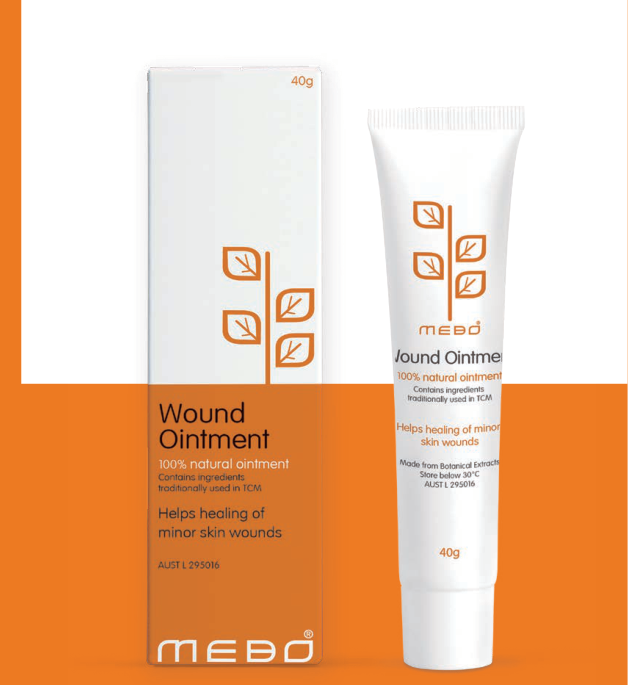

MEBO Wound Ointment
Our flagship topical regenerative medicine for burns and wounds — listed in Australia (AUST L 295016).
A patented topical for burns & wounds
MEBO Wound Ointment is a topical medicine for treating burns and wounds. It combines multiple naturally-derived active ingredients with a patented dosage form.
The ointment provides a physiological moist environment, liquefies and removes necrotic tissues, reduces pain, prevents and controls infection, prevents and minimizes scar formation, and promotes in situ skin regeneration.
Patented formulation

What is inside

The base: a frame that carries the actives
Beeswax forms a frame structure that holds sesame-oil droplets — average diameter 19 μm — containing all active constituents.
Active constituents
What it is used for
Burns
First-, second- and third-degree burns — thermal, chemical and electrical.
Chronic Wounds
Diabetic foot ulcers, pressure ulcers, venous ulcers and skin diseases.
Traumatic Wounds
Abrasions, lacerations and animal bites.
Surgical Wounds
General and plastic surgery wounds, graft sites and donor sites.
How it works
Seven complementary actions support the wound from protection to regeneration.
Regenerative Medicine in Action
An animated explanation of how regenerative medicine technology works at the cellular level.
Three application methods
The method is chosen according to the wound type and condition.
Exposed Method
1st-degree burns
Reapply every 4–6 hours
Semi-exposed Method
2nd-degree burns
Every 8–12 hours
Bandage Method
3rd-degree burns & chronic wounds
Every 12–24 hours
More from MEBO
Beyond our flagship ointment, MEBO extends regenerative science across five product categories.
Medication
- Moist Exposed Burn Ointment
- MEBO Wound Ointment

Skincare
- Anti-Scar
- Anti-Itch
- Anti-Acne

Healthcare
- GI Regenerate Capsules
- Sugar Balance
Medical Devices
- Wound Dressing
- Cooling Patch
- Cold & Hot Patch
- Sponge
- Scar Dressing

Cosmetics
- Skin Rejuvenation Series
Scientific references
Key publications behind the formulation and its mechanisms.
- WHO monographs on selected medicinal plants. VOLUM1 P:105-114.
- Chu M, et al. (2016) Role of berberine in the treatment of methicillin-resistant staphylococcus aureus infections. Sci Rep. 6:24748.
- Xie Y., et al. (2020) In vitro antifungal effects of berberine against candida spp. Drug Des Devel Ther. 14:87-101.
- Varghese F.S., et al. (2016) The antiviral alkaloid berberine reduces chikungunya virus-induced MAPK signaling. J Virol. 90(21):9743-9757.
- Jeong H.W., et al. (2009) Berberine suppresses proinflammatory responses through AMPK activation in macrophages. Am J Physiol Endocrinol Metab 296: E955-64.
- Choi B.K., et al. (2006) Berberine reduces the expression of adipogenic enzymes and inflammatory molecules of 3T3-L1 adipocyte. Exp Mol Med 38, 599-605.
- Zhang Q.W., et al. (2017) Antimycobacterial and anti-inflammatory mechanisms of baicalin via induced autophagy. Front Microbiol, 8, 2142.
- Jia Y, et al. (2016) Anti-NDV activity of baicalin from a traditional Chinese medicine in vitro. J Vet Med Sci. 78:819-824.
- Dinda B, et al. (2017) Therapeutic potentials of baicalin and its aglycone, baicalein against inflammatory disorders. Eur J Med Chem. 131:68-80.
- Paniagua-Pérez R., et al. (2016) Evaluation of the anti-inflammatory capacity of beta-sitosterol in rodent assays. Afr J Tradit Complement Altern Med. 14(1):123-130.
- Valerio M., Awad A.B. (2011) β-sitosterol down-regulates pro-inflammatory signal transduction pathways. Int Immunopharmacol. 11, 1012-1017.
- Li P, et al. (2018) Effects of baicalin on diabetic neuropathic pain. Neuroreport. 29(17):1492-1498.
- Villaseñor IM, et al. (2002) Bioactivity studies on beta-sitosterol and its glucoside. Phytother Res. 16(5):417-21.
- Gupta R., et al. (2011) Antidiabetic and antioxidant potential of β-sitosterol in streptozotocin-induced experimental hyperglycemia. J Diabetes, 3, 29-37.
- Jurjus A, et al. (2007) Pharmacological modulation of wound healing in experimental burns. Burns, 10.406.
- Carayanni V.J., et al. (2011) Comparing oil based ointment versus standard practice for moderate burns in Greece. BMC Complement Altern Med 11:122.
- Kahi CGE, et al. Modulation of wound contracture α-SMA and integrin αvβ3 in the rabbit model. Int Wound J 2009; 6:214-224.
- Xu R.X. (2008) Burns Treatment Book.
- Xu R.X. (2004) Comparative study of MEBO, Silver Sulfadiazine, and Hot Dry-exposed Therapy on controlling burn wound infection. Burns Regenerative Medicine and Therapy (pp.70-74). Karger.
- Xu R.X. (2004) Primary exploration on the mechanism of the anti-infection of BRT with MEBT/MEBO. Burns Regenerative Medicine and Therapy (pp.77-82). Karger.
- Ji C.S., et al. (2007) Scar quality and hand function after MEBO and skin graft treatment in full thickness hand burn. Ann Rehabil Med, 31(5), 582-589.
- Xu R.X. (2004) Pathomorphological change of deep burns wounds treated with MEBO. Burns.
Need more information?
Access professional resources, complete clinical data, and technical documentation for healthcare professionals.